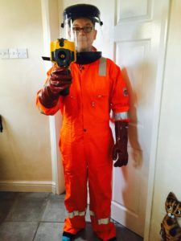
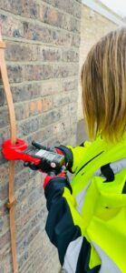
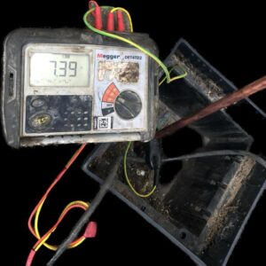
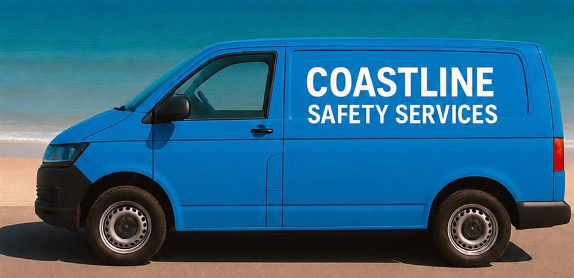

Our Work
Surveys and testing carried out on site, from thermal images of live equipment to earth and conductor checks.




Find electrical faults before they become failures, and keep your lightning protection compliant and working when it matters.
Request a Survey Our Services
Specialist, non-intrusive inspection and testing for commercial, industrial and public buildings.
Infrared inspection of electrical installations, switchgear and distribution boards to locate hot spots and developing faults without shutting down equipment.
Learn more →Inspection and testing of lightning protection systems to help you meet your duties under BS EN 62305 and keep your building protected.
Learn more →Surveys and testing carried out on site, from thermal images of live equipment to earth and conductor checks.



Tell us about your site and we will arrange a survey or test.
Call 02382 448464 Email us Send an enquiry